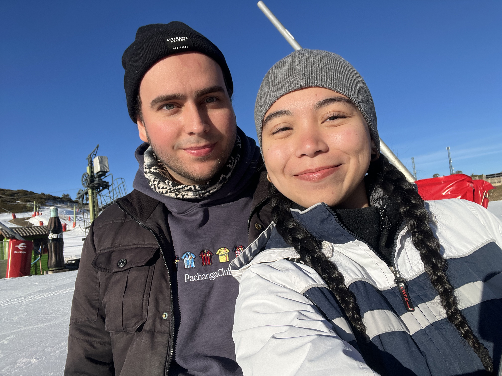

HELLO! THIS IS A SPECIAL GAME I MADE FROM SCRATCH TO MAKE UP FOR BEING A BITCH AND TO GIVE YOU AN IMPORTANT MESSAGE WITHOUT BEING SO EMOTIONAL AND HEAVY :)
WELCOME TO THE NEW AND IMPROVED QUIZ GAME OF LOVE!
ANSWER THE QUESTIONS CORRECTLY TO UNLUCK A SUPER SECRET MESSAGE AT THE END. GOOD LUCK!

Already obviously i’ve been managing things terribly. i’m struggling to find a balance in sharing things with you. i go from sharing too much and then completely shutting down and being distant to not overwhelm you. i know you’re in a very important period of your life that needs a lot of focus and attention and i know you can’t be there for me all the time. which i completely support but it contradicts when you say that you want me to share everything with you and then later shut down a conversation. it just creates a conflict in my head. so i know this may seem like a lot of complication to you but i think we need to set like very clear boundaries and expectations instead of just letting things flow.
i’ll always ask you if you’re ok for me to talk a bit before i say anything. this way i don’t get shut down in the middle of sharing which makes me feel bad. and i’ll try to limit it to the afternoon maybe? not after dinner when your trying to relax and of course not while your at work. let me know what would be better for you. and when i share things about how i’m feeling, i think what i “expect” or what would help me more than anything is just listening and understanding. i’d rather that you understand or try to understand every bit and ask questions and just make me feel less alone in it rather than trying to tell me what to do. it can be helpful but sometimes it feels like your trying to put a small bandaid over a missing finger and just be done with it. if i don’t know what to do then i ask. but if i feel that you are curious, not even to get me out of it, but to understand what it is in the first place that would make me feel a million times better and more well received i think.
i’m sorry if this makes you feel robotic and less natural but i think it will be helpful no? i hope you don’t take this as an attack or critique, you said you don’t know how to help me so i think this seems to be a good idea for now at least. and i don’t mind that you’re giving me what i need only after i ask for it. you said that makes it not meaningful but i think it shows more that you listen and put effort to learn me, which is more meaningful no? what do you think? it would mean a lot if you gave me your thought process on it. and of course i know right now it’s me but i’d appreciate also if you told me what you would need from me when you are the one struggling, how i can help, what boundaries to respect etc. not necessarily now but whenever you do feel it. you can let me know if i’ve completely over complicated this or if you think it will actually make sense and if ive helped you. i love you so much